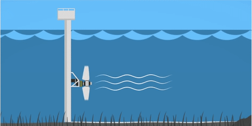

A energia das marés, também chamada de energia maremotriz, é obtida por meio do aproveitamento da energia potencial (a energia presente nos corpos dando a eles a capacidade de realizar trabalho, ou seja, capacidade de realizar alguma ação) proveniente do desnível das marés ou também pela energia cinética (forma de energia que um corpo possui em razão de seu movimento) das correntes marítimas. Para que essa energia seja revertida em eletricidade é necessária a construção de barragens, eclusas (possibilitando a entrada e saída de água) e unidades geradoras de energia.
O método mais habitual de aproveitamento da energia potencial das marés é através do uso de turbinas instaladas em barragens, construídas em estuários (ambiente aquático de transição entre um rio e o mar). O processo é semelhante ao utilizado na energia hidráulica das usinas hidrelétricas. O reservatório, a barragem, as comportas e os equipamentos eletromecânicos são as principais partes de uma usina maremotriz. O aproveitamento da energia pode ser feito durante a maré alta e durante a maré baixa. No decorrer da maré alta, a água entra no reservatório, passando pela turbina hidráulica e gerando energia elétrica. Durante a maré baixa, a água sai do reservatório, passando mais uma vez pela turbina e gerando energia elétrica. Denomina-se geração de efeito simples quando o sistema opera apenas durante a maré alta ou maré baixa, quando as duas formas são utilizadas denomina-se geração de efeito duplo.
É uma energia renovável, sustentável e limpa, mas por outro lado o custo inicial para a construção de uma usina é bastante elevado e esta energia só pode ser produzida em locais específicos, com condições geográficas favoráveis para a criação das barreiras para represar a água e com ocorrência de marés de grandes amplitudes, a geração de energia é descontínuo, pois ocorre conforme o ciclo natural das marés.